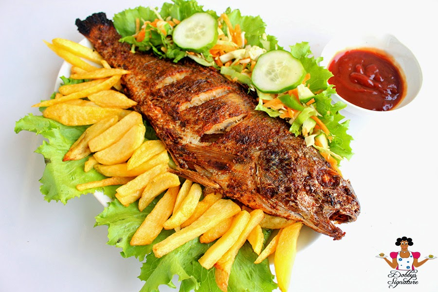

Grilled Fish

Grilling is a cooking processs that involves marinating the food then placing it on direct heat to make
ready-to-grill foods like tilapia fish into the perfect smoky perfection.
Here is that perfect tilapia fish recipe to pair with chips to Netflix and chill anytime any day
ingredients for fish
- 1/4 cup of salt
- caneroon pepper
- 1 tablespoon garlic powder
- 1 tilapia fish
- 2 medium potatoes
ingredients for sauce
- 2 tomatoes
- 1 bell pepper
- 1/2 scotch bonnet pepper
- 1 medium onion, diced
- 1 cube of stock
- 1 teaspoon fresh thyme
- 1/4 cup of vegetable oil
steps
- Clean, scale,and gut fish. The oven temperature is pre-set at 190 degrees Celsius.
- Clean and chop up the potatoes, drizzle with olive oil and put alongsidethe fish while grilling, remove when
ready.
- rub the fish with a mixture of spices and oil on both sides. Allow to marinate for one hour or preferably
overnight
- The fish sould be placed on a grill tray with a baking pan underneath to catch any liquid spills
- Bake for 25 minutes, followed by 5 minutes of broilimg at 275C
sauce
- Tomatoes, bell pepper and scotch bonnet pepper should be coarsely blended
- Onions are sauteed in oil over mediumheat, followed by the tomato and pepper mixture
- add a stock cube, curry abd thyme for seasoning
- taste for salt after 15 minutes of frying
- serve some as a side dish or spread some on top of the fish, add cucumver and fried fish, ans serve